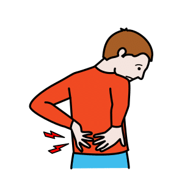

Thématique C · 2de Bac Pro
Fiche de révision C1 — Les enjeux de la santé et sécurité au travail
Révise en t'amusant, écoute, puis imprime ta fiche
Fais défiler la page : les notions apparaissent une à une. Touche les cartes pour les retourner, touche 🔊 Écouter pour entendre une carte, une question ou une correction, puis réponds aux questions « Je vérifie mes acquis ».
1. Les chiffres de 2024
549 614accidents du travail
764accidents du travail mortels
94 654accidents de trajet
50 598maladies professionnelles
Principaux facteurs de risque des accidents du travail : les manutentions manuelles (environ 50 %) et les chutes de plain-pied et de hauteur (environ 30 %). Source : Assurance Maladie, L'Essentiel 2024 – Santé et sécurité au travail, janvier 2026.
2. Santé, sécurité et enjeux
Touche une carte pour la retourner.
3. L'accident du travail et l'accident de trajet
Les quatre critères de l'accident du travail : touche chaque carte.
L'accident de trajetSur le trajet d'aller et de retour entre la résidence principale et le lieu du travail, ou entre le travail et le restaurant, la cantine. Un détour pour un covoiturage régulier reste couvert ; pas un détour pour un motif personnel étranger aux besoins essentiels de la vie courante.
 L'accident de droit communNi accident du travail, ni accident de trajet : par exemple un accident de la vie privée.
L'accident de droit communNi accident du travail, ni accident de trajet : par exemple un accident de la vie privée.4. La maladie professionnelle

La maladie professionnelleMaladie due à une exposition chronique à un risque dans les conditions habituelles du travail. Exposition : être en contact avec un danger ou un facteur de risque. Chronique : régulier ou prolongé.Le tableau de maladies professionnellesUne maladie désignée dans un tableau et contractée dans les conditions de ce tableau est présumée d'origine professionnelle (d'après le Code de la sécurité sociale, art. L. 461-1).
D'après le tableau n° 98 : sciatique par hernie discale L4-L5 ou L5-S1 ; délai de prise en charge 6 mois, sous réserve d'une durée d'exposition de 5 ans ; travaux de manutention manuelle habituelle de charges lourdes, par exemple dans le fret routier ou la livraison. Le délai de prise en charge est le délai maximal entre la fin de l'exposition et la constatation de la maladie.
5. Obligations et responsabilités
La protection collectiveElle passe en priorité sur la protection individuelle (d'après le Code du travail, art. L. 4121-2).
La protection individuelleUn équipement de protection individuelle est porté ou tenu par une personne pour la protéger contre un ou plusieurs risques.
La responsabilité de l'employeur : il peut devoir réparer un dommage (responsabilité civile) ou être sanctionné (responsabilité pénale). Si l'accident est dû à sa faute inexcusable, la victime a droit à une indemnisation complémentaire.
6. Le droit d'alerte et le droit de retrait
 Le droit d'alerteLe travailleur a un motif raisonnable de penser qu'une situation présente un danger grave et imminent : il doit alerter immédiatement l'employeur.
Le droit d'alerteLe travailleur a un motif raisonnable de penser qu'une situation présente un danger grave et imminent : il doit alerter immédiatement l'employeur.Le droit de retraitIl peut se retirer de cette situation, sans sanction ni retenue de salaire. Condition : ne pas créer pour autrui une nouvelle situation de danger grave et imminent.
7. Le nouvel embauché et la formation à la sécurité
Le nouvel embauchéSalarié, apprenti, stagiaire ou intérimaire qui arrive sur un poste nouveau. L'employeur organise pour lui une formation pratique et appropriée à la sécurité, comme pour les travailleurs qui changent de poste ou de technique.
Les trois contenus de la formation à la sécurité : touche chaque carte.
La formation PRAP (prévention des risques liés à l'activité physique) permet d'acquérir des techniques de manutention fondées sur la sécurité physique et l'économie d'effort. D'après Delagrave, PSE Bac Pro, 2024.
8. Le jeune travailleur
Travaux interditsLe jeune travailleur a moins de 18 ans. Certains travaux particulièrement dangereux lui sont toujours interdits.
Travaux réglementésPossibles pour un jeune en formation : déclaration de dérogation à l'inspection du travail (valable 3 ans), avis médical d'aptitude, encadrement par une personne compétente.
Je vérifie mes acquis : 0 / 0